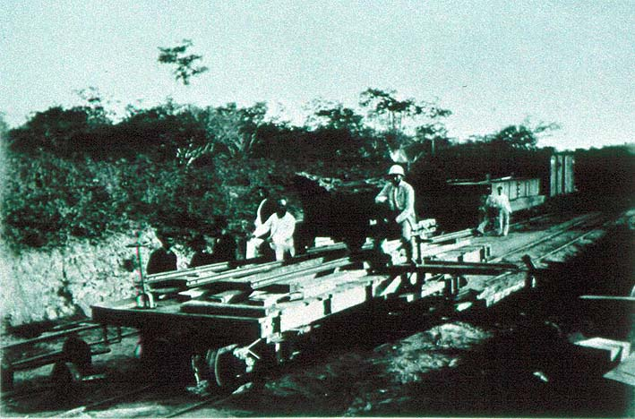

|
|  |
|
A. Antunes, Embarque do meteorito do Bendegó na Estrada de Ferro Prolongamento de Bahia
|
Vast distances also posed a problem for collections to reach the scientific institutions in the capital, though not always in quite as literal a way as in the case of the Bendegó meteorite, discovered in 1784 in the backlands of Bahia province. Spix and Martius, the Austrian naturalists who had arrived in the country with Empress Leopoldina, visited the curious finding in 1818, taking a fragment with them on their return to Munich. Only in 1888, following the construction of a railway line and the introduction of heavier steamboats, the meteorite, whose weight exceeded 5,000 kilograms, was finally transported to Rio de Janeiro, where it became the National Museum´s pièce de resistance following the removal of the institution to the Palácio de Boa Vista, the former residence of the Emperor.
|